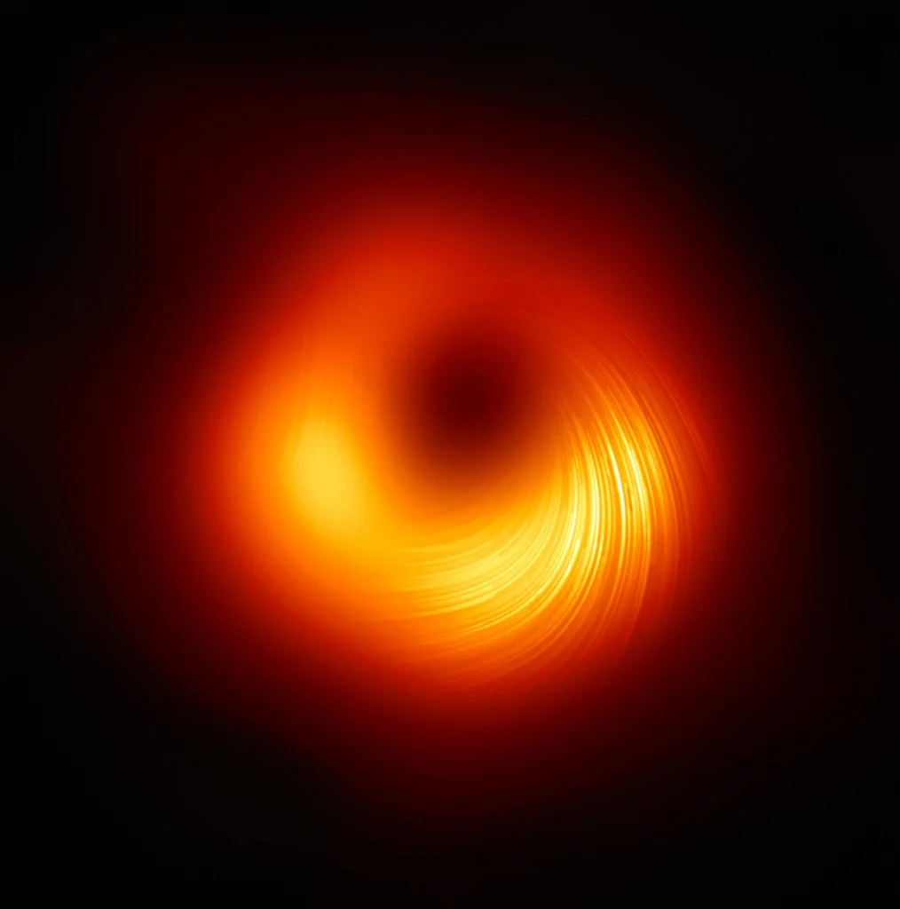
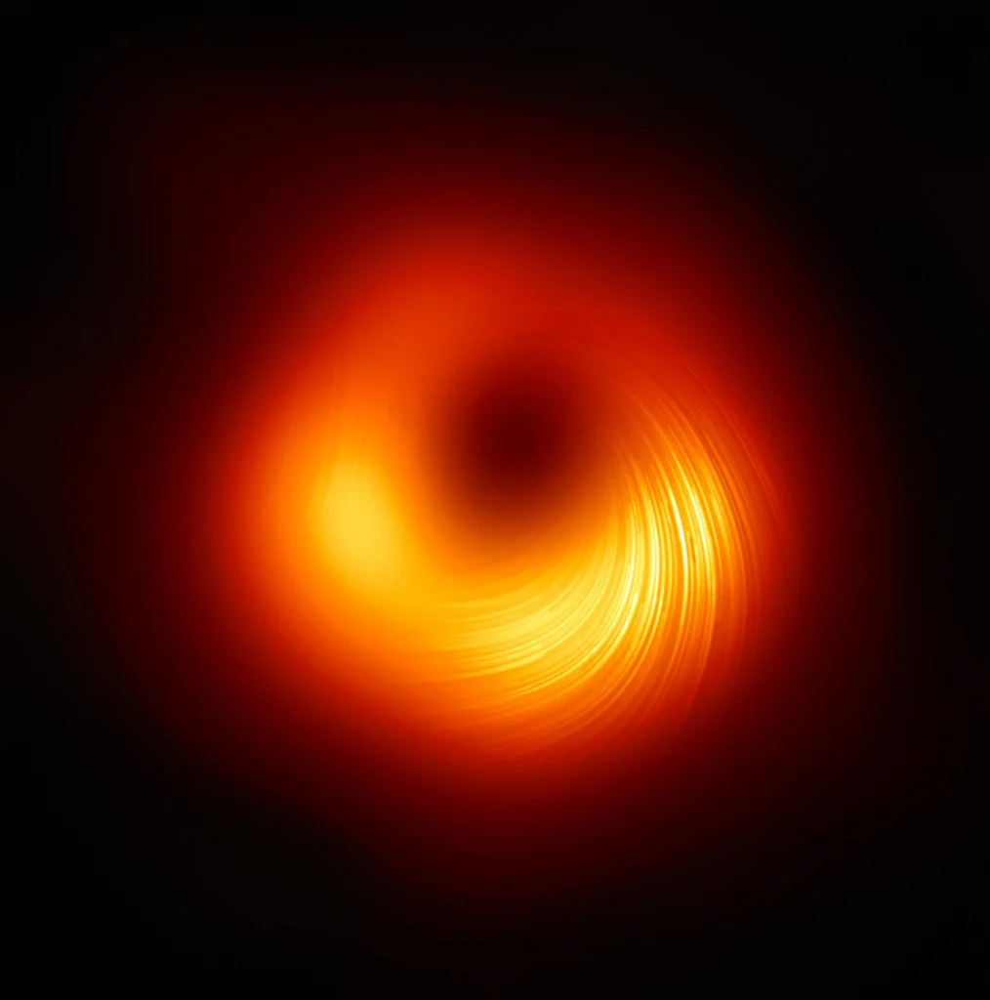

ΚΑΙ ΕΔΩ ΒΡΗΚΕΣ ΕΝΑ ΑΡΘΡΟ!!!
THIS IS WHERE YOU SHOULD BE
This the article of the year!!!
Μία ενότητα (section) όπου μέσα της θα περιέχεταιένα οποιοδήποτε κείμενο σε μορφή παραγράφου (p). Η ενότητα αυτή θα περιέχει επίσης και ένα άρθρο όπου μέσσα του θα περιέχεται
THIS IS WHERE YOU SHOULD BE
HERE YOU ARE